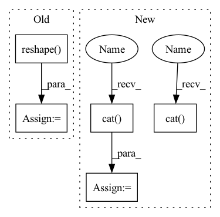

Pattern ID :2725
Before Change
if inputs is not None:
// Grouping multiple frames if necessary
if inputs.size(-1) == self.mel_dim:
inputs = inputs.reshape( B, inputs.size(1) // self.r, -1)
assert inputs.size(-1) == self.mel_dim * self.r
T_decoder = inputs.size(1)
// Time first (T", B, mel_dim*r)After Change
break
// To tensor
mel_outputs = torch .cat( mel_outputs, dim=1) // (B, T_decoder, mel_dim)
attn_scores = torch.cat( attn_scores, dim=1) // (B, T_decoder/r, T_encoder)
stop_tokens = torch.cat(stop_tokens, dim=1) // (B, T_decoder)
// Validation checkIn pattern: SUPERPATTERN
Frequency: 3
Non-data size: 5
Instances Fragment ID: 15175119
Project Name: thuhcsi/tacotron
Commit Name: fea9ec535ec373aad564646f4f292fbee0217c29
Time: 2021-03-18
Author: johnson.tsing@gmail.com
File Name: model/tacotron2.py
M Class Name: Decoder
N Class Name: Decoder
M Method Name: forward(4)
N Method Name: forward(4)
M Parent Class: nn.Module
N Parent Class: nn.Module
M File Name: model/tacotron2.py
N File Name: model/tacotron2.py
M Start Line: 127
M End Line: 224
N Start Line: 127
N End Line: 216
Before Change
b_k = bucket(buckets, k)
Wsq = expand_dim(self.linear_sort_q, 0, b).reshape(bh, dim, dim_sort)
Wsk = expand_dim(self.linear_sort_k, 0, b).reshape( bh, dim, dim_sort)
b_qi, b_ki = b_q.mean(dim=2), b_k.mean(dim=2)
After Change
Wsq, Wsk, pos_q, pos_k = map(partial(expand_batch_and_merge_head, b), (self.linear_sort_q, self.linear_sort_k, self.q_pos_emb, self.k_pos_emb))
b_qi = torch.cat( (b_q.mean(dim=2), pos_q), dim=-1)
b_ki = torch.cat( (b_k.mean(dim=2), pos_k), dim=-1)
sq = b_qi @ Wsq
sk = b_ki @ Wsk
Fragment ID: 15175124
Project Name: lucidrains/sinkhorn-transformer
Commit Name: a3d36f7cdf5b9a134787caf42ce18b5b28b0ddc5
Time: 2020-04-10
Author: lucidrains@gmail.com
File Name: sinkhorn_transformer/sinkhorn_transformer.py
M Class Name: AttentionSortNet
N Class Name: AttentionSortNet
M Method Name: forward(3)
N Method Name: forward(3)
M Parent Class: nn.Module
N Parent Class: nn.Module
M File Name: sinkhorn_transformer/sinkhorn_transformer.py
N File Name: sinkhorn_transformer/sinkhorn_transformer.py
M Start Line: 203
M End Line: 211
N Start Line: 212
N End Line: 220
Before Change
if inputs is not None:
// Grouping multiple frames if necessary
if inputs.size(-1) == self.mel_dim:
inputs = inputs.reshape( B, inputs.size(1) // self.r, -1)
assert inputs.size(-1) == self.mel_dim * self.r
T_decoder = inputs.size(1)
// Time first (T", B, mel_dim*r)
if inputs is not None:After Change
break
// To tensor
mel_outputs = torch.cat( mel_outputs, dim=1) // (B, T_decoder, mel_dim)
attn_scores = torch.cat( attn_scores, dim=1) // (B, T_decoder/r, T_encoder)
stop_tokens = torch.cat(stop_tokens, dim=1) // (B, T_decoder)
// Validation check Fragment ID: 15175118
Project Name: thuhcsi/tacotron
Commit Name: fea9ec535ec373aad564646f4f292fbee0217c29
Time: 2021-03-18
Author: johnson.tsing@gmail.com
File Name: model/tacotron2.py
M Class Name: Decoder
N Class Name: Decoder
M Method Name: forward(4)
N Method Name: forward(4)
M Parent Class: nn.Module
N Parent Class: nn.Module
M File Name: model/tacotron2.py
N File Name: model/tacotron2.py
M Start Line: 127
M End Line: 224
N Start Line: 127
N End Line: 216
Before Change
stop_tokens = torch.stack(stop_tokens).transpose(0, 1).squeeze(2)
// (B, T", mel_dim*r) -> (B, T, mel_dim)
mel_outputs = mel_outputs.reshape( B, -1, self.mel_dim)
return mel_outputs, stop_tokens, attn_scores
After Change
break
// To tensor
mel_outputs = torch.cat( mel_outputs, dim=1) // (B, T_decoder, mel_dim)
attn_scores = torch.cat( attn_scores, dim=1) // (B, T_decoder/r, T_encoder)
stop_tokens = torch.cat(stop_tokens, dim=1) // (B, T_decoder)
// Validation check Fragment ID: 15175117
Project Name: thuhcsi/tacotron
Commit Name: fea9ec535ec373aad564646f4f292fbee0217c29
Time: 2021-03-18
Author: johnson.tsing@gmail.com
File Name: model/tacotron.py
M Class Name: Decoder
N Class Name: Decoder
M Method Name: forward(4)
N Method Name: forward(4)
M Parent Class: nn.Module
N Parent Class: nn.Module
M File Name: model/tacotron.py
N File Name: model/tacotron.py
M Start Line: 87
M End Line: 187
N Start Line: 88
N End Line: 180